National Yiddish
Theatre Folksbiene
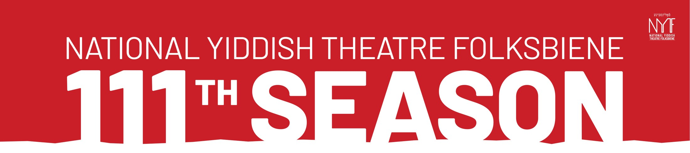
A hundred and eleven years in, and the season still travels.
Two pieces of work in the same year: the season that had to ship, and a set of options for the mark that carries everything after it. The season runs from a synagogue in the Hamptons to the Ahmanson in Los Angeles, from a church in Harlem to Central Park. Fourteen events, four strands, all of it arriving on one page.
Most of the titles here are in a language the reader does not speak. Every one carries with English supertitles behind it. The typography has to say you can follow this before anyone gets as far as the description.
Red and black on white. Condensed sans for the season, serif italic for every title, so the programme holds one voice and each show keeps its own. Venue then date in red under the title, always that order, so you can skip the copy and still know where and when.
14
Events held on one page, New York to Los Angeles.
The sheet
One page, printed and mailed. The masthead carries the season, the strands break the year into four, and every listing below runs on the same three lines.
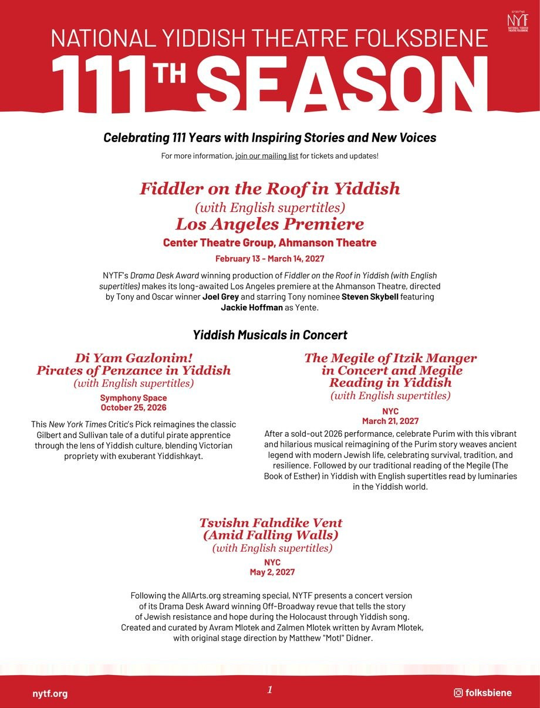
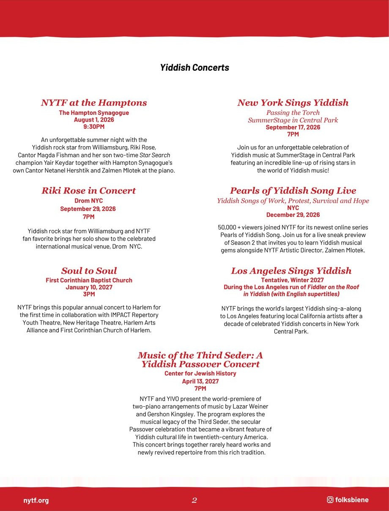
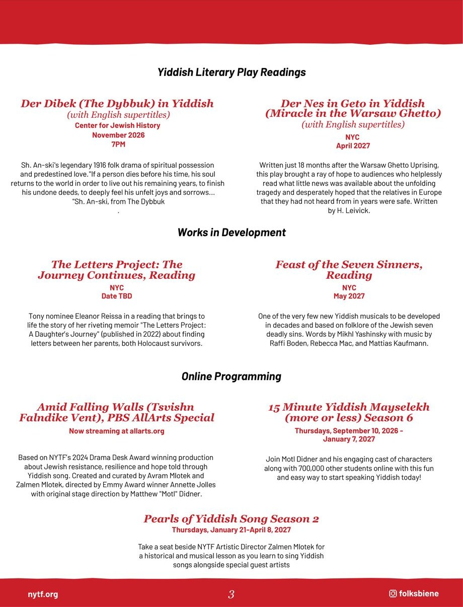
The mark
Separately, and on a longer horizon: one mark for a name that runs five words across two alphabets. It has to hold at an Ahmanson-scale poster and at the size a phone gives it, and to keep what 111 years earns without reading as an archive. Nine directions, each drawn in every colourway it was tested in, because a mark that only holds in one colour is not a system yet.
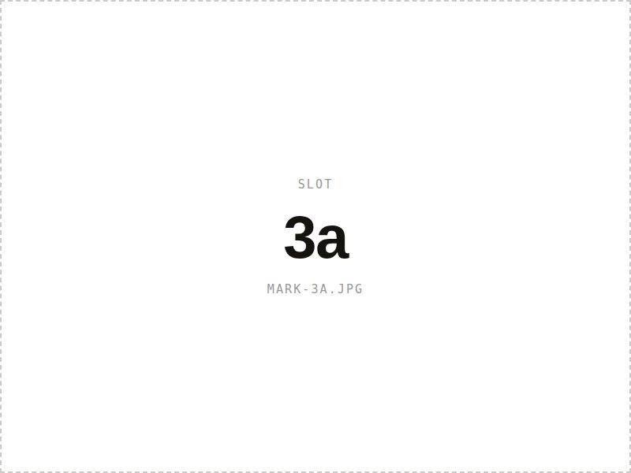
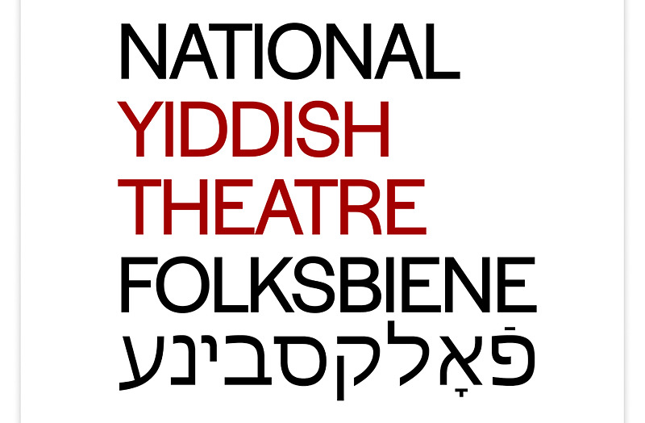
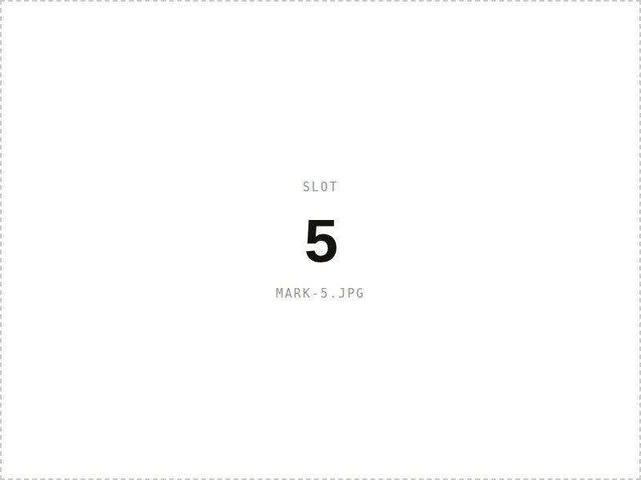
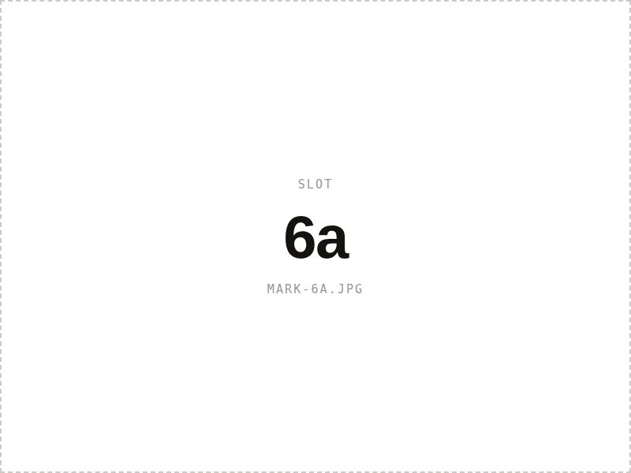
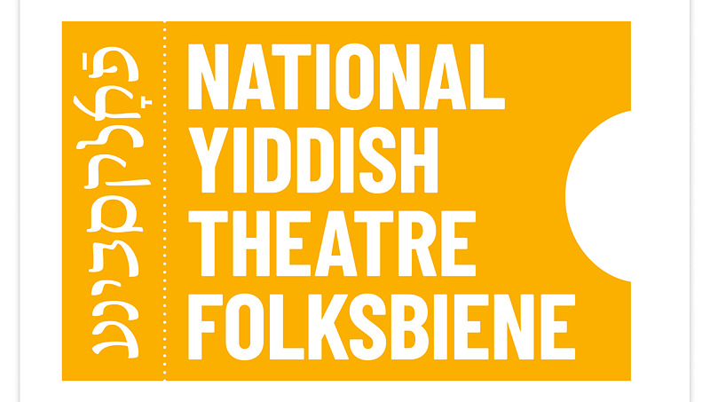
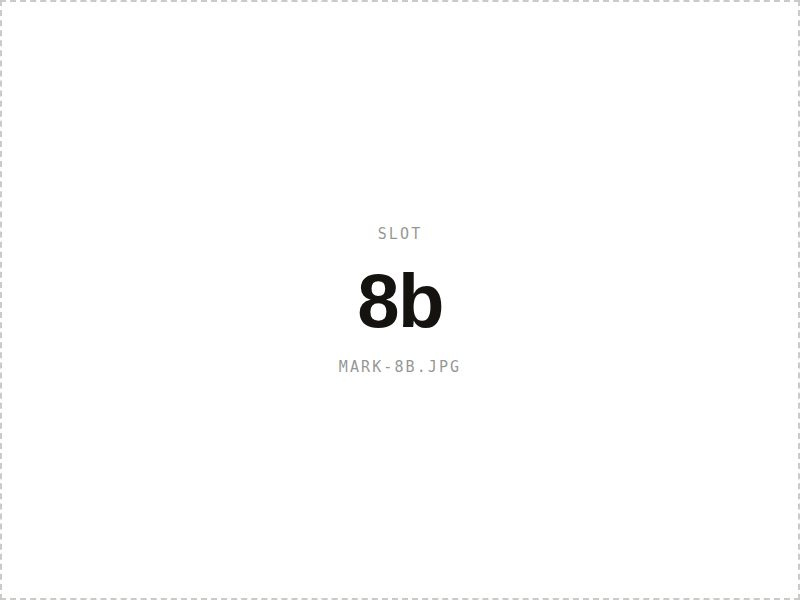
Where it ran
The sheet went out at New York SummerStage in Central Park, at the Folksbiene’s own Yiddish concert in September. The show the audience was standing at is listed on the sheet they were handed.
The gala
The gala sits outside the season sheet and takes its own footing: navy and gold, a drawn frame, made to go in an envelope rather than on a table. It went out on the same SummerStage night.
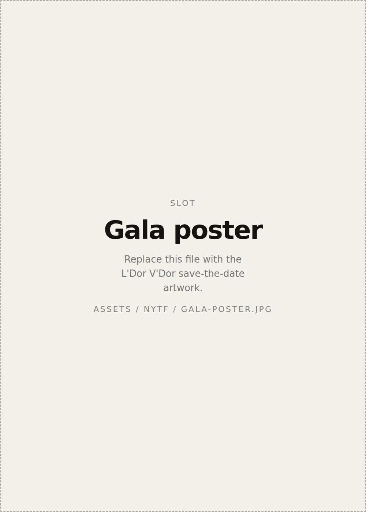
A season sheet is a working document. It goes out to a mailing list, sits on a table in the lobby, and gets read by someone deciding how to spend a Sunday. The measure is whether they can find the one show that is for them.